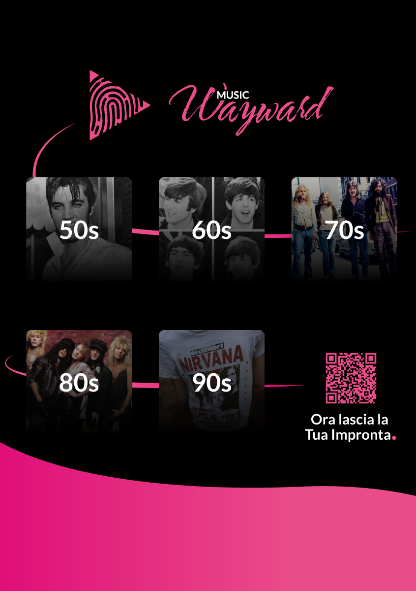
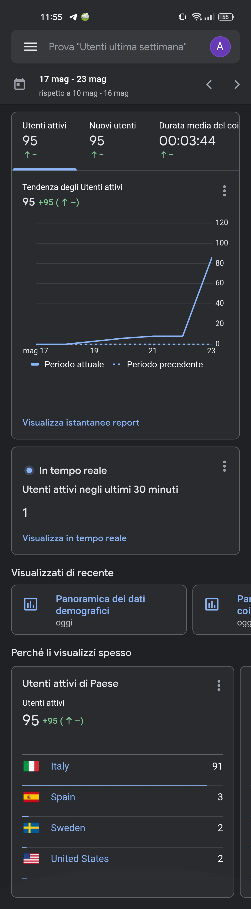
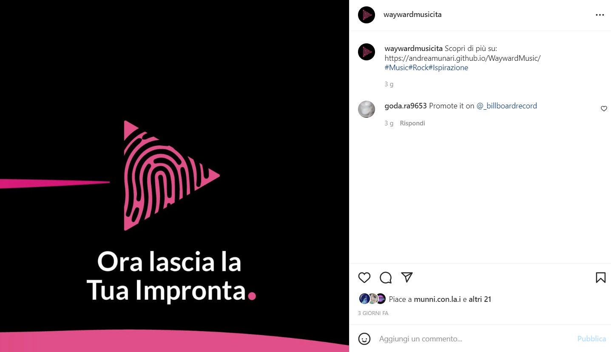

Documentazione
Abstract
Il portale Wayward Music nasce perchè è semplice reperire le risorse per imparare a suonare uno strumento su internet, ma non è altrettanto facile trovare qualcosa che aiuti un giovane artista a definire la sua impronta musicale.
Wayward Music aiuta infatti ogni aspirante musicista a studiare lo stile di leggende che hanno fatto la storia!
Se si cerca qualcosa di più attuale, è possibile imparare come far evolvere il proprio stile studiando
la capacità degli artisti contemporanei di rimanere in vetta.
Le videolezioni sono brevi documentari che spingono l'utente a mettersi in gioco per acquisire i
concetti affrontati nei corsi.
Project Management Plan
Benchmarking
Obiettivi
- Permettere lo studio di alcuni dei più grandi artisti del passato per trovare uno stile musicale unico.
- Invogliare l'utente target a mettersi in gioco.
Target utente
Giovani artisti alla ricerca del proprio
stile.
Competitors
Sono stati individuati due competitors di Wayward Music:
Nam online Portale web di corsi online legato alla scuola di musica NAM di Milano. Anch'esso è quindi un sito che incoraggia un approfondimento musicale piuttosto che uno studio basilare. Ha un target più ampio rispetto a Wayward Music perchè offre corsi che spaziano su molti argomenti, tra cui l'utilizzo di software per la composizione musicale. La palette è molto semplice e riprende i colori del NAM: magenta, blu, giallo e nero o bianco per il testo. Il sito web del NAM e del NAM-online sono molto simili per mantenere la stessa brand identity, ma ci sono alcune scelte che fanno percepire NAM-online come più moderno. In particolare il cambiamento più evidente è il menu, non più reattivo al passaggio del mouse e più colorato per dare maggiore personalità. Vibly E' un portale di lezioni di musica online che però si comporta come un sito di streaming video. Infatti si invita l'utente a guardare i corsi come fossero serie tv. In base al colore delle immagini di anteprima alle lezioni è possibile capire chiaramente a quale strumento si fa riferimento. Anche in questo caso il target è più generico rispetto a quello di Wayward Music, in quanto è comunque possibile seguire le serie 'da zero' per imparare un determinato strumento, ma anche seguire serie più avanzate per approfondire solo alcuni aspetti particolari. Lo sfondo del sito è nero, che offre un ottimo contrasto con i colori dedicati ad ogni strumento trattato. Il sito è piuttosto lento, probabilmente perchè vengono usate moltissime immagini in ogni pagina. Inoltre abbiamo notato alcune funzionalità mancanti, come il pulsante "filtri" nel catalogo che se premuto non fa nulla, o l'assenza di animazioni nel menu. In generale quindi il sito è molto ben fatto ma manca l'attenzione ai dettagli.
Struttura e layout
Architettura del sito
Wireframe


Scelte Grafiche
Font:
Libreria Font utilizzata: Google Fonts
- Font 1: “Water Brush”, cursive. Obiettivo: enfarizzare il sentimento di ribellione (nostro leitmotiv)
- Font 2: “Lato”, sans-serif. Si è scelto di usare un font senza grazie per scrivere la parola 'Music' nel logo, in modo da rappresentare di più la classicità e la solidità della Musica, generando così una contrapposizione tra le due parole. Lo stesso font è stato utilizzato anche per la maggior parte dei contenuti del portale.
Palette Cromatica:
#ea4c89
#8f00ff
#ffffff
#000000

Per la scelta cromatica abbiamo preso ispirazione dalla foto di una ragazza che evoca il senso di libertà e di “essere se stessa”, in modo da trasmettere le stesse sensazioni agli utenti del sito.
Peculiarità Stilistiche:
Nella realizzazione del portale Wayward Music si è prestata particolare attenzione a UI e UX, rispettando sempre il proprio leitmotiv e creando un sito esperienziale. Nella Homepage è stato utilizzato un Visual Storytelling: partendo dalla foto di un concerto dove non si vede la band si è voluto far immedesimare l’utente con il gruppo che suona sul palco. Navigando verso il basso appaiono canzoni e band che hanno fatto la storia del rock e come sezione finale vi è la call to action con una frase evocativa che vuole creare empatia con l’utente, invogliando il giovane artista a mettersi in gioco. La cura dei dettagli è stata la prorità, per esempio i bottoni con state hover su sfondo nero ricordano i fari usati nei concerti.
Linguaggi e Strumenti:
- HTML: Struttura sito
- CSS: Grafica sito
- SCSS: Gestione dinamica timeline
- JavaScript: Aforismi e Preloader
- JQuery: Navbar per scroll, Searchbar corsi
- Bootstrap: Supporto per grafica e Responsiveness
- Google Analytics: Statistiche sulle visite al sito
- Adobe Illustrator: Realizzazione Logo
- Adobe Photoshop: Post Instagram e immagini
- PowerPoint: Presentazione
Communication Strategy
Background
I difetti principali dei competitor sono la lentezza dei caricamenti, una carente cura per i dettagli e uno studio non adeguato della UX: il sito nam-online presenta un fastidioso popup promozionale che si apre in automatico (ma non immediatamente) quando si visita la homepage, il cui stile dei pulsanti non è coerente con il design del sito. Per quanto riguarda il sito Vibly, il problema maggiore è la lentezza dei caricamenti tra una pagina e l'altra, dovuta al grande numero di immagini. Dato che anche Wayward Music usa molti contenuti multimediali, si è deciso di mostrare un loader che permette all'utente di capire quando il sito è in fase di caricamento.
Obiettivi comunicativi
La scelta della palette di colori del sito è stata l'elemento principale per trasmettere il senso di ribellione sociale e politica legata al rock. L'interattività delle pagine è fondamentale per attirare l'attenzione dell'utente e stimolarne la curiosità, in modo che scopra gradualmente il contenuto dei corsi, capendo comunque da subito quali sono quelli che gli potrebbero interessare. E' da questo aspetto che deriva la scelta dell'uso della timeline, con link diretti alla sezione corretta della pagina dei corsi. Gli obiettivi che sono stati prefissati per determinare il successo di Wayward Music sono:
- Raggiunta di almeno 50 visite da utenti unici
- Permanenza media di 2 minuti sul sito web
- Raggiunta di almeno 20 like ad almeno un post della pagina Instagram
Per valutare se gli obiettivi sono stati raggiunti utilizziamo Google Analytics.
Target audience e messaggio
Wayward Music si rivolge agli artisti under 25 che già possiedono una discreta conoscenza musicale e che sono quindi alla ricerca del loro stile. Questo gruppo di persone si può raggiungere tramite i social (Instagram in particolare), gruppi Telegram tematici, podcast su Spotify, o anche tramite bar e pub 'open-mic', che permettono a chiunque di esibirsi sul palco. La sfida più grande per questo sito è superare la convinzione che lo stile artistico sia qualcosa da sviluppare in autonomia. Per cambiare questa idea, è necessario fare informazione sulle origini dei grandi artisti: studiando la storia, si scoprirà che nessuno ha creato il proprio stile dal nulla. Per essere efficaci, le informazioni devono essere anche presentate nel modo migliore per il target. Per questo nel sito è stata inserita la timeline con frasi brevi e concise, che portano subito a maggiori approfondimenti nei relativi corsi. Quindi l'obiettivo è che l'utente target impari qualcosa in più sulla storia del rock, capendo che il suo stile non perderebbe originalità se prendesse spunto dalle star che lo hanno preceduto. Ed è proprio a questo che serve il sito: insegnare come prendere ispirazione senza copiare, suggerendo anche di mettersi in gioco e vivere esperienze edificanti. I target secondari di Wayward Music sono quindi:
- Appassionati della storia del rock (quindi non necessariamente musicisti)
- Curiosi che vogliono sapere di più su una canzone o una band
Promozione
- Social (Instagram)
- Stampa e radio (Virgin Radio)
- Gruppi Whatsapp o Telegram interessati all'argomento
- Volantini con QR al sito nei bar/pub che fanno serate 'open-mic'
- Podcast su Spotify
Volantino:
Valutazione dei risultati
Tramite Google Analytics è stato verificato che gli obiettivi posti sul sito sono stati raggiunti e superati:  Anche gli obiettivi posti sulla pagina Instragram sono stati raggiunti: 